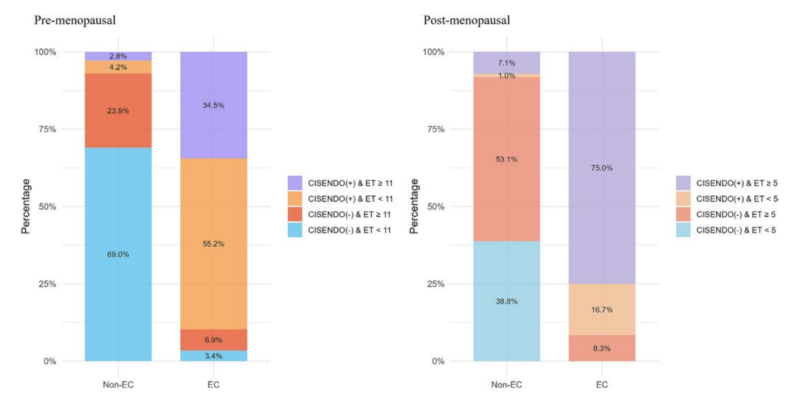

1Background & Objective
- Problem: EC incidence rising; no general screening; TVS/ET thresholds unreliable, esp. premenopausal.
- Objective: evaluate CISENDO (CDO1/CELF4 methylation) ± endometrial thickness (ET) for EC triage.
2Study Design & Cohort
524
non-EC
41
EC
8
EIN
- Setting: Hainan General Hospital; prospective, Jan–Jun 2022; hysteroscopy-referred.
- Assay: CDO1/CELF4 methylation (CISENDO) on cervical scrapings + TVS ET.
- Analysis: stratified by menopause; univariate & multivariate logistic (aOR).
- EC profile: 92.7% endometrioid; 70.7% FIGO stage I — early-stage detection.
608
enrolled
573
analyzed
2022.1–6
enrollment
- Inclusion: ≥18 y, hysteroscopy indication, informed consent.
- Exclusion: incomplete data · prior gynecologic cancer · hysterectomy · pregnancy.
- Readout: ΔCt cut-offs — CDO1 8.4 · CELF4 8.8.
- Menopause: amenorrhea ≥12 months (guideline-based).
- OR rule (either positive): max sensitivity — Se 96.6%/100%.
- AND rule (both positive): max specificity — Sp 97.2%/98.0%.
- NPV >90% across most combinations — safe deferral.
- Ultrasound limitation: ET alone AUC 0.57 — methylation co-test lifts to 0.83.
Methylation was the strongest independent EC predictor vs all clinical/ultrasound factors (P<0.001).
3Performance by Menopausal Status
Premenopausal
89.7%
Se
93.0%
Sp
0.91
AUC
- 55.2% EC: ET <11 mm yet CISENDO(+) — catches what ultrasound misses.
Postmenopausal
91.7%
Se
91.8%
Sp
0.92
AUC
- 52.7% non-EC: ET ≥5 mm yet CISENDO(−) — cuts false alarms.
4Methylation–TVS Concordance

Fig. Methylation–TVS concordance — risk-stratification across pre/postmenopausal groups.
97.2%
pre non-EC ruled out
92.9%
post non-EC ruled out
53.1%
post ET ≥5 mm · CISENDO(−)
23.9%
pre ET ≥11 mm · CISENDO(−)
- Few misclassified: isolated methylation+ with thin ET only 4.2% (pre) / 1.0% (post).
- Corrects ultrasound: methylation clears ET-driven false positives & negatives.